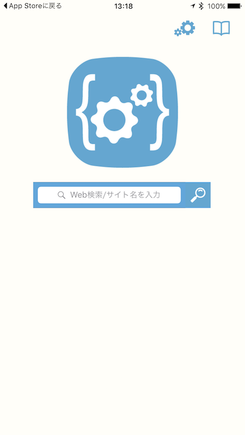
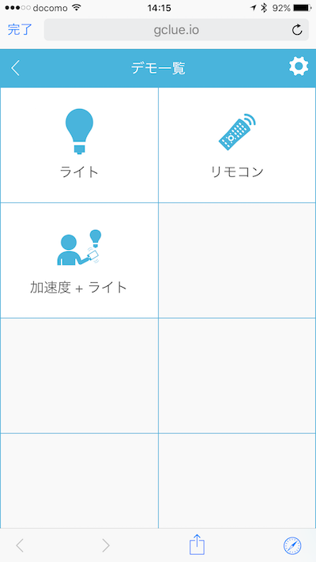
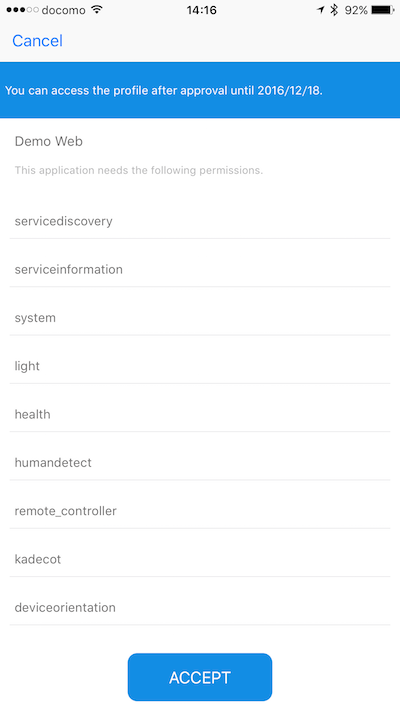
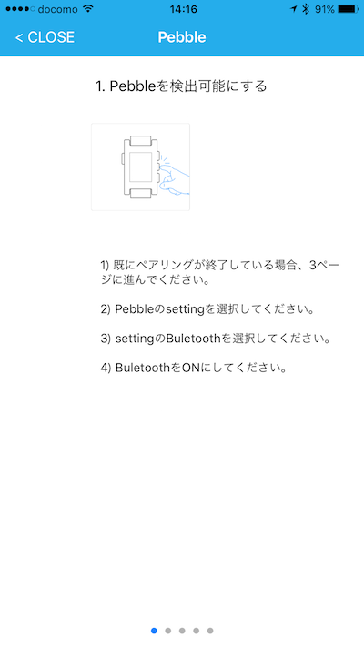
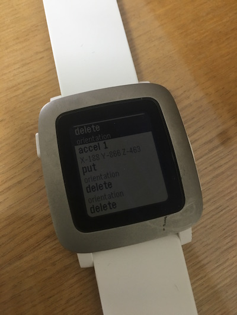

はじめてみよう（iOS）
iOS端末を使ってDeviceConnectを体験します。今回はPebbleと連携してみたいと思います。
必要なもの
- iOS端末
- Pebble
アプリのインストール
今回はアプリのビルドを行わず、GClue社がリリースしているDevice Web API Managerをインストールします。
DeviceWebAPIBrowserを App Store で

このアプリはDeviceConnectのフロントエンドとして使えるアプリです。
アプリの起動
アプリを起動すると次のような画面が表示されます。

ここで、URLに https://www.gclue.io/dwa/demo/ と入力して検索ボタンをタップします。次のような画面が出てくればOKです。

ここでは加速度 + ライトをタップします。そうすると、次のようにデータ取得に関する承認ダイアログが表示されます。

今回は加速度センサーとしてPebbleを使います。チュートリアルに沿って進めていきます。

DeviceConnect用のアプリをPebbleにインストールします。

アプリがインストールされると、加速度センサーの候補としてPebbleが表示されるようになります。

このようにPebbleとDeviceConnectとで通信を行っているログが表示されます。

DeviceConnectにはたくさんのプラグインがリリースされており、それを使うことでウェアラブルデバイスがJavaScriptから操作できるようになります。ぜひ試してみてください！